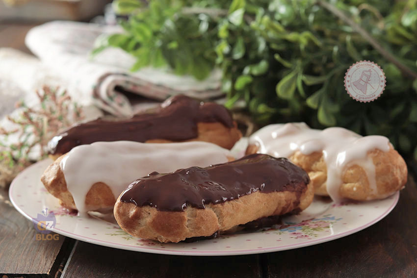

Éclair Francesi Classiche
Raffinati dolcetti della pasticceria francese a forma allungata, realizzati con soffice pasta choux e farciti a piacere con vellutata crema o cioccolato, completati da una brillante glassa in superficie.

Ingredienti
Per la Pasta Choux:
- 125ml di Acqua
- 125ml di Latte intero
- 100g di Burro
- 150g di Farina 00
- 4 Uova medie (a temperatura ambiente)
- 1 pizzico di Sale fino
- 1 cucchiaino di Zucchero semolato
Per la Farcitura (A scelta):
- Variante Cioccolato: 400g di Crema o Ganache al Cioccolato fondente/al latte.
- Variante Crema Pasticcera: 400g di Crema pasticcera alla vaniglia o al limone.
- Variante Caffè o Pistacchio: 400g di Crema aromatizzata al caffè o al pistacchio.
Per la Glassa (A scelta):
- Glassa al Cioccolato: Cioccolato fondente fuso con un noce di burro.
- Glassa allo Zucchero: Fondente di zucchero o zucchero a velo liquido con aroma a scelta.
- Decorazione finale: Granella di nocciole, pistacchi o scaglie di cioccolato.
Procedimento
- Preparazione della base: In un pentolino unisci acqua, latte, burro, sale e zucchero. Porta ad ebollizione a fuoco medio fino a quando il burro non si scioglie completamente.
- Aggiunta della farina: Togli dal fuoco, versa la farina setacciata tutta in una volta e mescola energicamente con un cucchiaio di legno. Rimetti sul fuoco per 1-2 minuti finché l'impasto si stacca dalle pareti.
- Incorporazione delle uova: Lascia intiepidire l'impasto in una ciotola, poi unisci le uova **una alla volta**, lavorando bene prima di aggiungere la successiva, fino ad ottenere un composto liscio e cremoso.
- Formatura delle éclair: Metti la pasta choux in una sac-à-poche con bocchetta francese (o dentellata) da 12-15 mm. Traccia dei bastoncini dritti lunghi circa 10-12 cm su una teglia rivestita di carta da forno.
- Cottura: Cuoci in forno statico preriscaldato a 190°C per circa 20 minuti, poi abbassa la temperatura a 170°C e cuoci per altri 10 minuti. Mantieni lo sportello leggermente fessurato negli ultimi minuti per far uscire l'umidità.
- Farcitura: Fai raffreddare le éclair. Pratica 2-3 piccoli fori sul fondo (oppure tagliale a metà per il lungo) e farciscile generosamente con la crema scelta usando una sac-à-poche.
- Glassatura: Intingi la parte superiore di ogni éclair nella glassa scelta, ripulisci i bordi e decora prima che la glassa si rapprenda.
💡 Note Finali e Consigli dell'Mastro Pasticcere
- Utilizzo della bocchetta dentellata: Usare una bocchetta a stella o dentellata per formare i bastoncini aiuta la pasta choux a crescere in modo uniforme durante la cottura senza spaccarsi.
- Estetica perfetta: Per una glassa super lucida come in pasticceria, scalda leggermente la ganache o il fondente prima di intingere le éclair.
- Conservazione: Le éclair farcite vanno conservate in frigorifero per un massimo di 2 giorni per mantenere il contrasto tra la croccantezza del guscio e la morbidezza del ripieno.